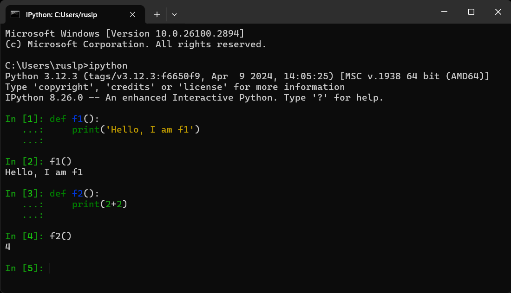
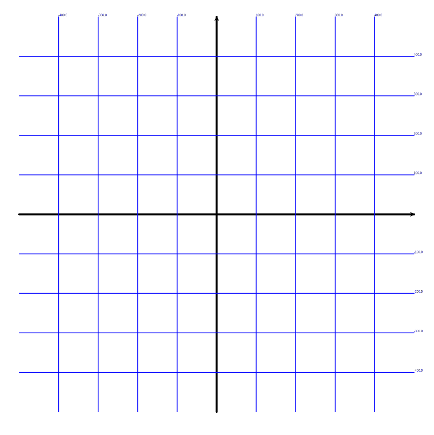

Сегодня мы повторяли ранее изученный материал и продолжали погружаться глубже в волшебство Python и Turtle! 🐢✨
Звёзды — это не только красиво, но и отличный способ прокачать свои навыки:
Мы использовали два способа рисовать звёзды:
goto.forward и повороты.Цикл for — секретное оружие художника.
Вместо десяток строк кода — всего пару строк и звезда готова!
Функции — твои суперспособности.
def.
Прокачиваем, добавляя аргументы! Например, сделай функцию, которая рисует звёзды разного размера при помощи
аргумента size. (пример кода: на прошлом уроке)
Многоконечные звёзды:
Проверь код из прошлого урока, чтобы не забыть секреты!
Как стать мастером координат? Секрет в том, чтобы разбить всё на маленькие шаги:
Циклы для повторяющихся линий:
Вспомни, как легко рисовать одинаковые штуки с помощью for.
Переменные:
Используем size, nlines, step, чтобы наш код был понятным и гибким.
Координаты:
Учимся вычислять, куда должна двигаться черепашка!
Подписи к линиям:
Используем функцию write!
Вот магический код:
from turtle import *
width(5)
speed(0)
size = 500
# нарисовать ось Ox
penup()
goto(-size, 0)
pendown()
goto(size, 0)
setheading(0)
stamp()
# нарисовать ось Oy
penup()
goto(0, -size)
pendown()
goto(0, size)
setheading(90)
stamp()
# нарисовать дополнительные линии
width(2)
color("blue")
nlines = 5
step = size / nlines
for i in range(1, nlines):
# рисуем горизонтальную линию выше оси Ox
penup()
y = i * step
goto(-size, y)
pendown()
goto(size, y)
write(y)
# рисуем горизонтальную линию ниже оси Ox
penup()
goto(-size, -y)
pendown()
goto(size, -y)
write(-y)
# рисуем вертикальную линию правее оси Oy
penup()
goto(y, -size)
pendown()
goto(y, size)
write(y)
# рисуем вертикальную линию левее оси Oy
penup()
goto(-y, -size)
pendown()
goto(-y, size)
write(-y)
done()
🔍 Результат: Готовая координатная сетка:

Теперь добавим немного творчества и построим дом.
coord при помощи import, чтобы видеть, где рисуем.from turtle import *
from coord import step
width(4)
color("brown")
# рисуем стены
penup()
setheading(270)
goto(-3 * step, step)
begin_fill()
fillcolor('sienna3')
pendown()
forward(5 * step)
left(90)
forward(6 * step)
left(90)
forward(5 * step)
end_fill()
# рисуем крышу
penup()
begin_fill()
goto(-4*step,step)
pendown()
goto(4*step,step)
goto(0,4*step)
goto(-4*step,step)
fillcolor('salmon4')
end_fill()
done()
🏡 Результат:
👉 Подсказка: читаем ответы здесь.
Миссия: Доработать дом.
💡 Совет: Экспериментируй! Попробуй менять размеры, углы и цвета. Чем больше пробуешь, тем интереснее результат!
Делись результатами и задавай вопросы! У тебя отлично получается!